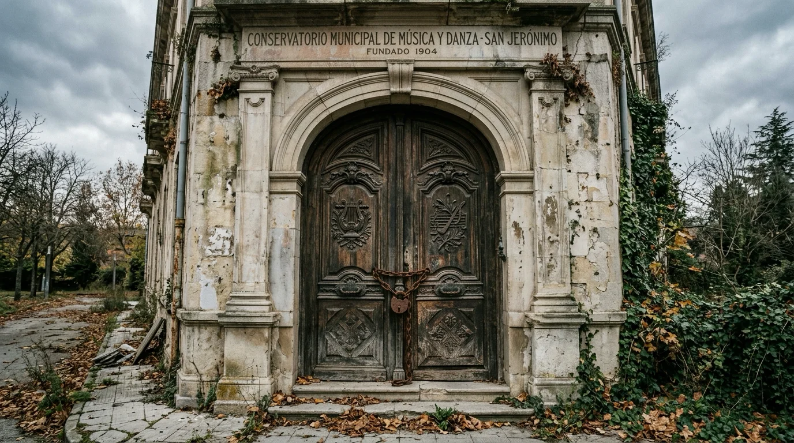
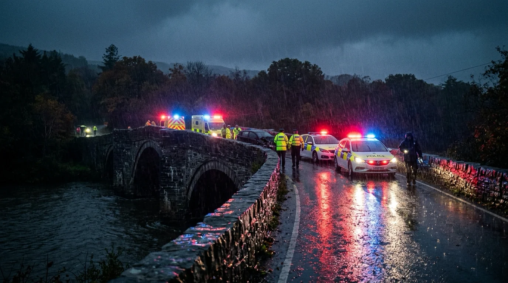
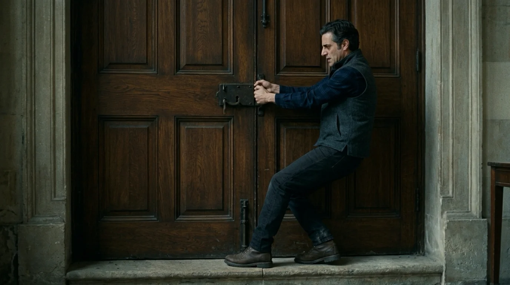
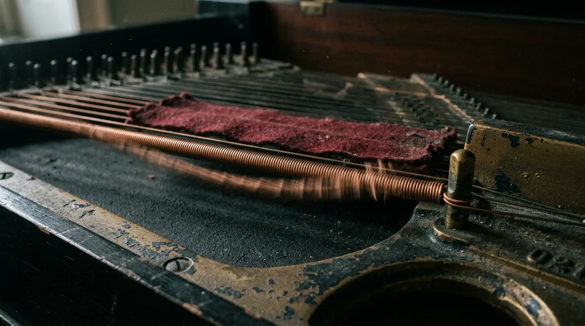
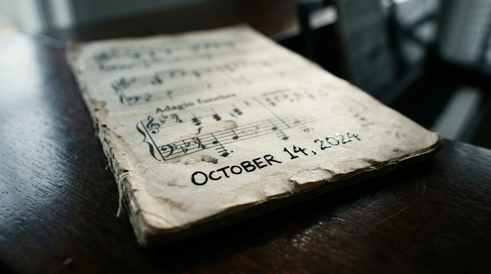

El auditorio de San Jerónimo olía a polvo dormido, fieltro apolillado y barniz de colofonia, un olor que Gabriel llevaba veinte años intentando olvidar. La sala municipal llevaba dos décadas clausurada, desde la noche en que el maestro Sebastián Cruz abandonó el podio a mitad de un ensayo general, cruzó las puertas del vestíbulo y no volvió a ser visto jamás. El ayuntamiento preparaba la subasta del edificio, pero antes requería un peritaje del piano principal: un Bösendorfer Imperial de noventa y siete teclas que descansaba en el escenario como el ataúd de un gigante negro.
Gabriel dejó su maletín sobre las tablas del proscenio. Sacó la llave de afinar de palisandro, las cuñas de goma y el viejo diapasón a cuatrocientos cuarenta hercios. Al levantar la pesada tapa armónica, un crujido seco reverberó en los palcos vacíos.
Comenzó por el registro medio. Tocó el La central. La nota sonó apagada, arrastrando una vibración ronca que no pertenecía a la cuerda. Gabriel deslizó el mecanismo de macillos hacia afuera y alumbró el bastidor con su linterna.
Allí, encajada entre las palancas del pedal tonal y los bordones del registro subcontrabajo, asomaba una libreta negra de tapas forradas en hule.
Al sacarla, un olor a tinta ferrogálica y alcanfor subió hasta su rostro. Gabriel sopló la ceniza de la primera página. En la cabecera, con la caligrafía afilada de Sebastián Cruz, figuraba un título: *«Cronologías acústicas»*.
Debajo había pentagramas manuscritos. Cada pieza ocupaba dos o tres páginas, acompañada de un título, una tonalidad y una fecha futura precisa.
La primera composición, titulada *«Estudio en Si menor para cuerda rota»*, estaba fechada el doce de noviembre de dos mil diez. Al lado figuraba un nombre: *Marcos Téllez*. Gabriel se detuvo en seco. Marcos había sido profesor de solfeo en el centro; recordaba que había muerto en un accidente de tren a finales de aquel otoño. Pasó otra hoja: *«Elegía en Fa sostenido»*, catorce de marzo de dos mil dieciocho, *Doctor Valdés*. El médico de la institución.
—Necrológicas imaginarias de un anciano desquiciado —murmuró Gabriel, frotándose los ojos cansados.
Sin embargo, al llegar a la página cuarenta y dos, sus ojos se clavaron en una fecha inmediata: catorce de octubre de dos mil veintiséis. Hacía cuatro días.
El título decía: *«Requiem breve para violonchelo en Re menor»*. Y debajo, con tinta más oscura: *Elena Salgado*.
Elena había sido su compañera de aula, la muchacha que afinaba su chelo junto al radiador y con quien había compartido silencios de juventud. Llevaba años sin verla, desde que ella ingresó en la orquesta provincial.
Apoyó la libreta en el atril. Sus dedos largos se posaron sobre el teclado.
La pieza era un contrapunto áspero y sofocante. La mano izquierda sostenía un pedal obstinado de octavas graves que imitaba el traqueteo de un motor a ralentí; la derecha dibujaba una melodía ascendente que se cortaba en seco en un acorde disonante de séptima disminuida, seguido por un silencio con calderón y un golpe sordo en el registro más grave.
Gabriel tocó el último acorde. La resonancia murió despacio en el auditorio.

Su teléfono móvil vibró sobre el maletín. Gabriel descolgó con el pulso acelerado. Al otro lado, la voz rota de Javier Montes, antiguo trompista del conservatorio, apenas lograba hablar.
—Gabriel... acaban de avisarme del hospital —dijo Javier entre sollozos—. Ha sido Elena. Esta misma tarde, al salir del ensayo. Un camión de reparto se quedó sin frenos en la bajada del puente de piedra. Murió en el acto. Dicen que el reloj de su coche se detuvo a las cuatro y cuarto.
Gabriel bajó la mirada hacia el papel. En el compás final, bajo el calderón, una nota diminuta a lápiz decía: *«16:15 horas. Detención del pulso en el vano central»*.
Aquella noche, Gabriel no pudo cerrar los ojos. A las dos de la madrugada subió de nuevo al coche y condujo de regreso a San Jerónimo bajo una llovizna fría.
Entró por la cancela de servicio y subió con la linterna al despacho de Sebastián Cruz en la segunda planta. El lugar conservaba los archivadores bajo una espesa capa de polvo. Gabriel forzó la gaveta central del escritorio hasta dar con los diarios de trabajo del maestro.
Eran cuadernos de tapas de cartón repletos de fórmulas armónicas. Cruz sostenía que el universo no estaba hecho de materia estática, sino de frecuencias en constante rozamiento. *«El tiempo no transcurre en línea recta»*, rezaba una entrada de dos mil cinco. *«Es un acorde suspendido. Las catástrofes y los fallos cardíacos no son accidentes: son resoluciones armónicas inevitables. Si se calcula la frecuencia fundamental de una persona, se puede escribir el intervalo que precipita su final»*.
Más adelante, la caligrafía se volvía temblorosa:
*«El Bösendorfer no reproduce la música: la impone. Cuanto más perfecto es su timbre, mayor es su poder de arrastre sobre los cuerpos. He intentado quemar las hojas, pero las cuerdas conservan la memoria de lo escrito. El piano exige que la partitura sea tocada para liberar la tensión del bastidor. Si el acorde final resuena, la persona muere. Si intento callar el instrumento, la tensión se vuelve contra mí»*.
Gabriel soltó el cuaderno, abrumado por el frío de la estancia.
Bajó las escaleras hacia el escenario con el pulso desbocado.
Llegó frente al piano. La libreta seguía sobre el atril. Pasó las hojas una a una con dedos trémulos. Ya no quedaban fechas del pasado.
En la última página, la tinta todavía conservaba un brillo azulado y reciente.
En el encabezado se leía:

*«Nocturno final para afinador en Do sostenido menor».*
Debajo figuraba su propio nombre: *Gabriel Soler*.
La fecha fijada en el margen superior era esa misma noche: veinte de octubre de dos mil veintiséis. Y junto a la fecha, una hora: *«23:40 horas»*.
La indicación del primer compás ordenaba: *«Grave y pesante. El pulso decae compás a compás»*. En el último sistema, sobre un acorde violento en fortissimo que combinaba notas del registro subgrave con una disonancia desgarradora en los agudos, una advertencia sentenciaba: *«Ruptura simultánea de los bordones de acero y colapso cardíaco ante el teclado»*.
Gabriel miró su reloj. Marcaba las once y veinticinco. Faltaban quince minutos.
Un sudor gélido le empapó las sienes. Corrió hacia las puertas dobles del vestíbulo y empujó el cerrojo de hierro.
La madera no cedió.
Tiró con ambas manos, apoyando los botines contra el quicio de piedra. Las hojas de roble estaban trabadas como soldadas por fuera. Fue hacia las ventanas laterales: las rejas de forja maciza impedían cualquier escape. El viento de la noche golpeaba los cristales con furia sorda.
El silencio del auditorio se transformó en una presión acústica creciente, un zumbido grave que nacía de las entrañas del escenario.
Gabriel recordó las notas marginales de Cruz: *«El destino es un intervalo físico. No se puede eludir la vibración mediante la fuga; la onda te alcanza en cualquier parte. La única salvación reside en la modulación: si la disonancia se reconduce a tiempo hacia una resolución consonante, la catástrofe se disuelve en el aire»*.
Corrió de vuelta al escenario y se plantó ante el instrumento.
Tomó su lápiz de carpintero. Miró los tres últimos compases. Cruz había planteado una cadencia rota que colapsaba en un intervalo de tritono —el *diabolus in musica*—, forzando a los martillos a percutir los bordones con una violencia mortal.
Con mano firme, Gabriel tachó las notas del acorde fatídico. En el espacio superior reescribió la secuencia: anuló el tritono, preparó una apoyatura dulce y transformó el acorde final en una tríada luminosa y abierta de Mi Mayor, la relativa mayor de Do sostenido menor, una tonalidad de reposo absoluto.
Miró su reloj: las once y treinta y siete. Faltaban tres minutos.

Gabriel se sentó en la banqueta de palisandro. Respiró hondo y colocó las manos sobre las teclas de marfil.
A las once y treinta y ocho exactas, atacó el primer acorde.
La música fluyó con una pesadez asombrosa. Las notas no sonaban en la sala; vibraban directamente en su caja torácica y en sus clavículas. La mano izquierda marcaba un pulso fúnebre, lento y seco, que imitaba el latido de su propio corazón.
Sentía cómo la sangre se espesaba en sus venas. El escenario parecía estrecharse en un túnel oscuro donde solo existían las teclas iluminadas por la linterna.
Llegó a la mitad de la pieza. Un dolor punzante le atravesó el pecho, un calambre frío que le bajó por el brazo izquierdo. El teclado ofrecía una resistencia pesada y gomosa, como si debajo de las teclas empujara agua estancada.
—No te voy a dar ese final —susurró entre dientes—. No esta noche.
Aceleró la transición y alcanzó los compases corregidos.
Su corazón dio un vuelco errático, deteniéndose durante dos segundos interminables. La partitura original le exigía golpear los bordones con toda la fuerza para desatar el colapso. En lugar de eso, Gabriel respiró hondo, aflojó la muñeca derecha y condujo los dedos con suavidad matemática hacia las notas que había dibujado a lápiz.
Tocó el Sol sostenido. Deslizó el pulgar hacia el Si. Y con un movimiento limpio de ambos brazos, dejó caer las manos sobre la tríada de Mi Mayor.
El acorde resonó en la sala con nobleza serena y profunda. Las noventa y siete cuerdas vibraron al unísono, disipando la tensión acumulada en el bastidor en una onda cálida que recorrió el proscenio.
El sonido se apagó lentamente a lo largo de diez segundos.
El reloj de pared del vestíbulo dio las once y cuarenta y un minutos.
Gabriel dejó caer los brazos, empapado en sudor. Se tocó el cuello: su pulso latía regular y templado.
Había alterado la partitura. Había vencido al destino.

Una sonrisa exhausta se dibujó en sus labios. Levantó las manos del teclado, cerró las tapas de hule de la libreta y suspiró aliviado.
Entonces, desde las profundidades del piano, sonó una nota.
No fue una tecla pulsada por fuera: fue el bordón más grave de todos, el La subcontrabajo que dormía oculto en el extremo izquierdo del bastidor, vibrando con un gemido sordo y prolongado que sacudió las patas del instrumento.
Gabriel se quedó petrificado en la banqueta.
Desde el interior de la caja de resonancia comenzó a escucharse otro sonido:
Unos aplausos.
Eran palmadas lentas, secas y burlonas, el aplauso solitario de unas manos huesudas batiendo en la oscuridad más profunda del mueble.
*¡Plas... plas... plas...!*
Gabriel se puso en pie de un salto, derribando la banqueta. Tomó la linterna y alumbró el vientre del instrumento. Retiró con manos desesperadas el puente de apagadores y examinó el espacio ciego bajo la tabla armónica.
Allí abajo, en una cavidad oculta que no figuraba en ningún plano de fábrica, había un montón de jirones de paño negro podrido, botones de nácar y, sobre el polvo de madera, un anillo de plata maciza grabado con una clave de sol invertida.
El anillo de Sebastián Cruz.
Antes de que Gabriel pudiera gritar, los ochenta y ocho macillos del Bösendorfer se levantaron al unísono en el aire.
Sin que ninguna mano humana tocara el marfil, el piano comenzó a interpretar por sí solo la partitura a una velocidad vertiginosa. Pero no tocaba la versión corregida: tocaba la versión original, la que Gabriel había tachado a lápiz. Las notas resonaban con un volumen ensordecedor que hacía crujir las vigas del techo.
Gabriel intentó retroceder, pero la vibración acústica le paralizó las piernas, clavándole las suelas a las tablas como un imán invisible.

La música devoró los compases intermedios en un torbellino de disonancias. Llegó al compás final.
Los macillos del registro grave cayeron como yunques de plomo sobre los tres bordones inferiores con un chasquido titánico:
*¡CRAC!*
Las cuerdas de acero se partieron bajo la tensión brutal, restallando como látigos dentro de la caja. Un dolor fulminante, frío y absoluto como un bloque de hielo, estalló en el centro del pecho de Gabriel.
La linterna rodó por las tablas. Las puertas del auditorio se cerraron de golpe con un estruendo sordo que selló el silencio de la noche.
A las nueve de la mañana del día siguiente, dos tasadores municipales y un cerrajero empujaron las puertas principales de San Jerónimo para inventariar los bienes del edificio antes de la demolición.
La luz del otoño entraba limpia por la claraboya, iluminando el gran Bösendorfer Imperial que descansaba en el centro del escenario, lustroso, imponente y reluciente.
—Vaya pieza —comentó el tasador más joven, pasando la yema del dedo por el barniz impecable de la tapa—. Dicen que el afinador vino anoche a revisarlo.
El cerrajero se acercó al teclado. Apretó una tecla al azar: un Do central perfecto, puro y resonante, vibró en la sala con una afinación cristalina de concierto.
—Ha hecho un trabajo de primera —dijo el hombre, asintiendo con admiración—. Ni un solo zumbido. Parece recién salido de fábrica.
Sobre el atril de madera noble reposaba una libreta negra encuadernada en hule, abierta de par en par. El tasador se inclinó sobre ella para curiosear los pentagramas manuscritos.
En la última página, la tinta todavía conservaba un brillo húmedo y azulado.
El título rezaba: *«Estudio en Re menor para tasador municipal»*.
Y debajo, con una caligrafía limpia que no admitía réplica, figuraba la fecha del día siguiente.